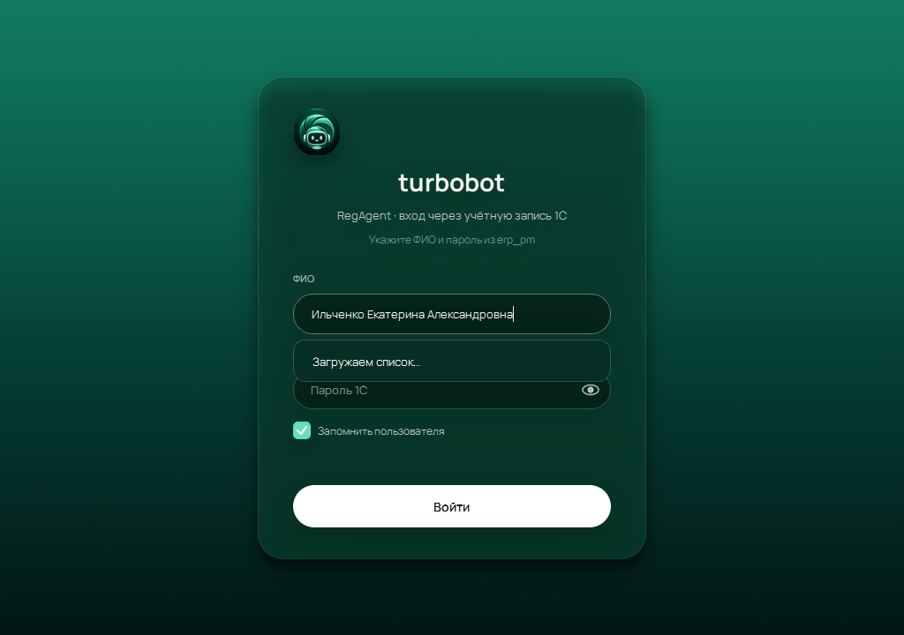
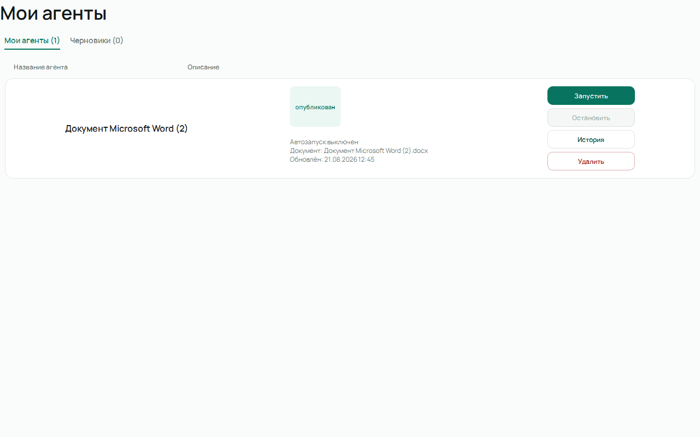
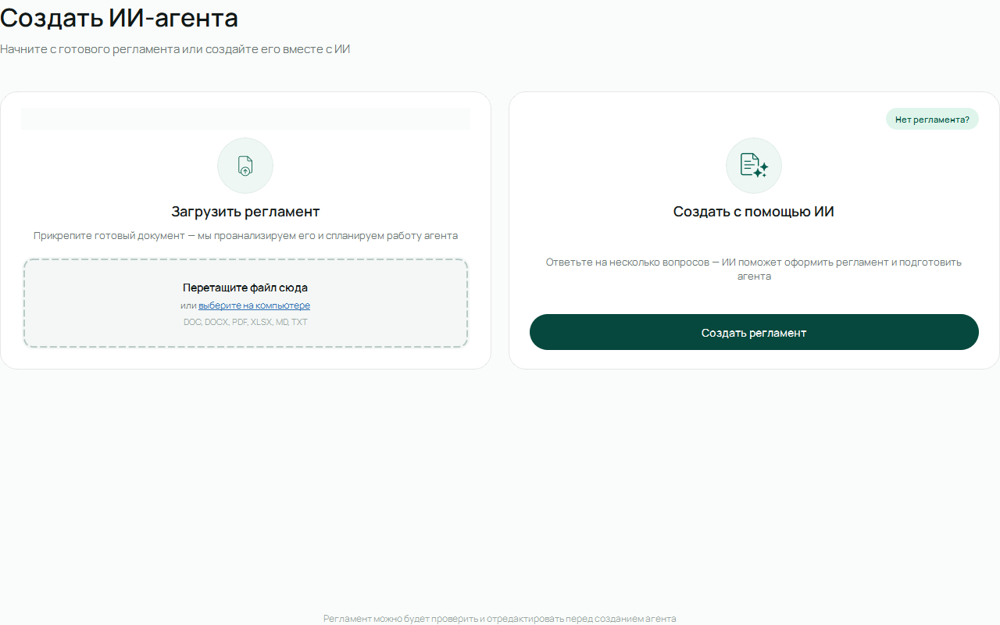
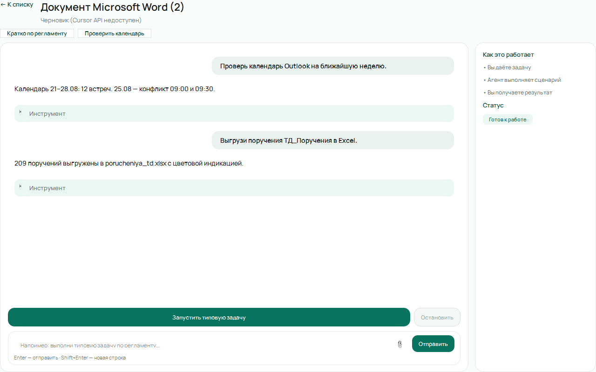
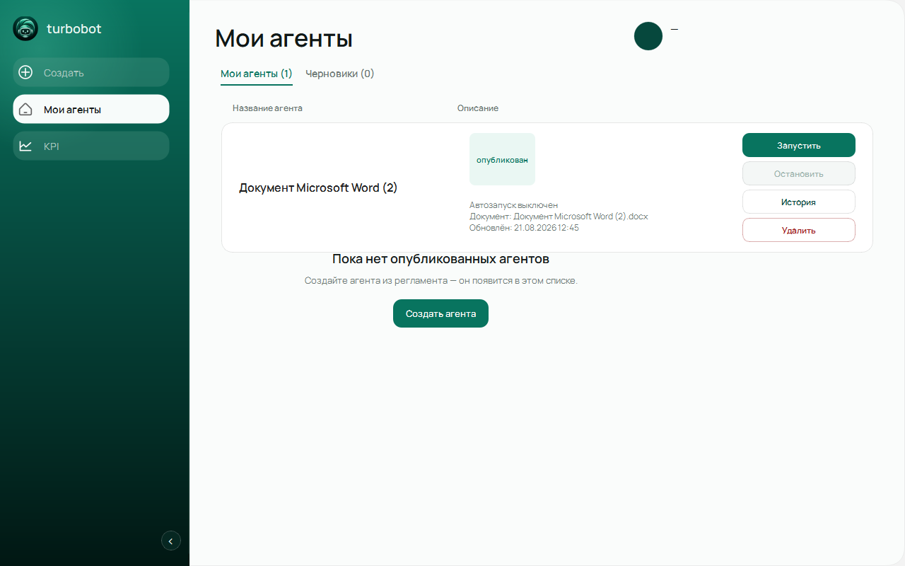
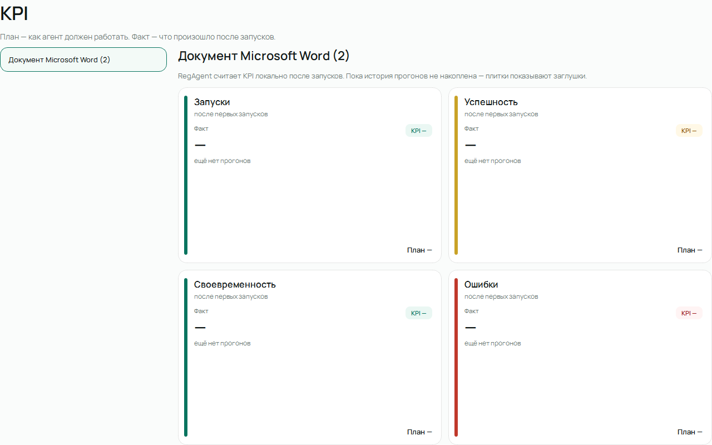
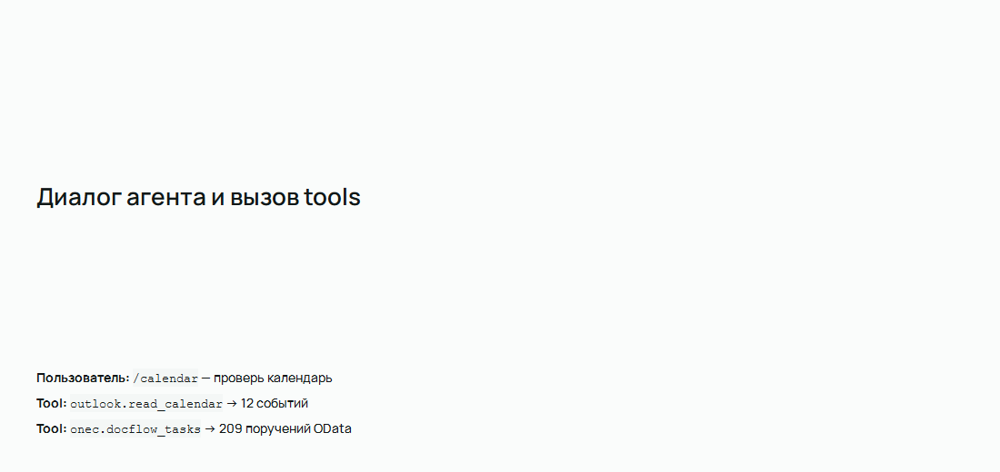
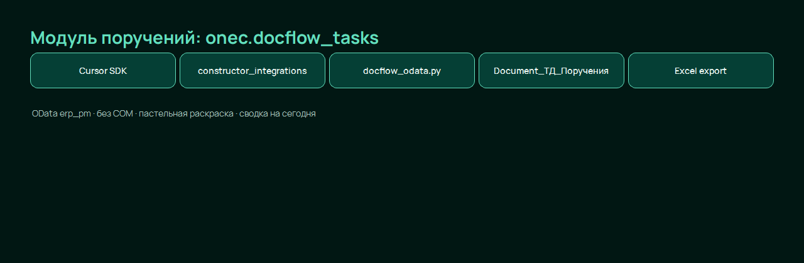
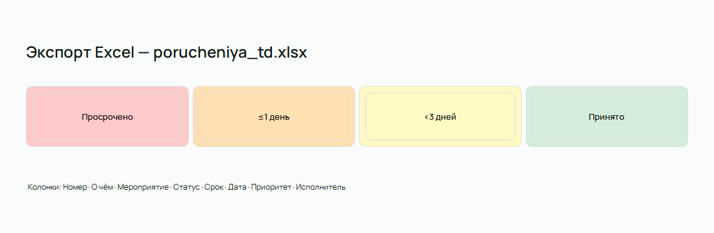

Desktop-приложение для работы по регламенту с ИИ-агентом, 1С и Outlook
ООО НПО «Турбулентность-ДОН» · PySide6 + Cursor SDK · 2026
Авторизация по ФИО, интеграция с backend или тестовый режим (REGAGENT_TEST_LOGIN).

Список опубликованных карточек и черновиков. Каждая карточка = регламент + UI-spec + workspace агента.

Загрузка DOCX/PDF/MD → LLM формирует кнопки, rules_prompt и slash-команды.

ЧатКнопки сценариевCursor SDK

Боковое меню: Создать · Мои агенты · KPI. Профиль пользователя и история сессии.

Сводная статистика по агентам и статусам публикации.

Custom tool constructor_integrations — единая точка для Outlook COM и 1C OData.

onec.docflow_tasks → Document_ТД_Поручения (erp_pm). Без COM и shell для 1С.

Пастельная раскраска по статусу и сроку, приоритет Критический/Высокий, сводка на сегодня.

Прокрутка ↑↓ между слайдами · скриншоты с реального UI RegAgent